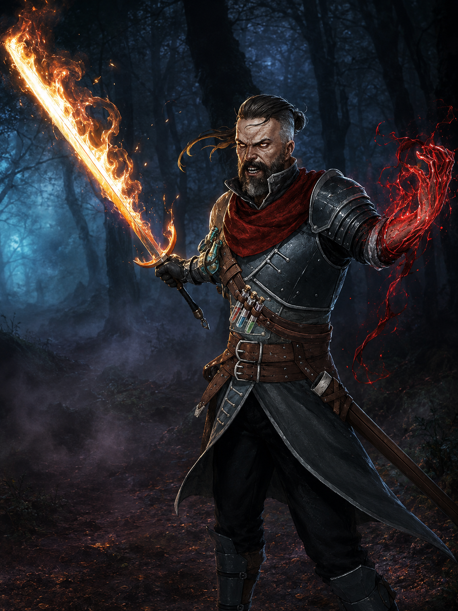

Subclasses
Bárbaro
Bardo
Clérigo
Druída
Feiticeiro
Guerreiro
Ladino
Modificações
Magias de Origem Feiticeira - Lista Expandida
Aqui estão as listas de magias expandidas para as subclasses que originalmente não as possuíam. Ao atingir certos níveis na classe você aprende algumas magias específicas da sua subclasse.
Alma Favorecida
| Nível de Feiticeiro | Magias |
|---|---|
| 1º | Santuário |
| 3º | Restauração Menor |
| 5º | Remover Maldição |
| 7º | Guardião da Fé |
| 9º | Restauração Maior |
Linhagem Dracônica
| Nível de Feiticeiro | Magias |
|---|---|
| 1º | Orbe Cromática |
| 3º | Sopro do Dragão |
| 5º | Proteção Contra Energia |
| 7º | Destruição Elemental |
| 9º | Invocar Elemental |
Magia das Sombras
| Nível de Feiticeiro | Magias |
|---|---|
| 1º | Braços de Hadar |
| 3º | Passos sem Pegadas |
| 5º | Invocar Prole Sombria |
| 7º | Sombra de Transtorno |
| 9º | Enervação |
Magia Selvagem
| Nível de Feiticeiro | Magias |
|---|---|
| 1º | Raio do Caos |
| 3º | Coroa da Loucura |
| 5º | Piscar |
| 7º | Confusão |
| 9º | Passo Distante |
Feiticeiro da Tempestade
| Nível de Feiticeiro | Magias |
|---|---|
| 1º | Onda Trovejante |
| 3º | Lufada de Vento |
| 5º | Convocar Relâmpagos |
| 7º | Esfera da Tempestade |
| 9º | Controlar os Ventos |
Modificação Monge
Evolução do Dado de Monge
| Dado | Nível |
|---|---|
| 1d4 | 1–2 |
| 1d6 | 3–6 |
| 1d8 | 7–12 |
| 1d10 | 13–16 |
| 1d12 | 17–20 |
Reserva de Ki Aprimorada
Você ganha pontos de Ki adicionais sempre que atinge um marco de sua subclasse (níveis 3, 6, 11 e 17) e um ponto final no nível 20.
Ataque Desarmado
Golpes desarmados executados por um monge, e armas de monge que possuem a característica de poderem ser utilizados usando tanto Força como Destreza, assim funcionando igual uma arma com a propriedade Acuidade, serão considerados válidos para utilização de habilidades que possuem essa exigência, como no caso do Ataque Furtivo.
Modificação Humano (Base)
A raça Humano (Base) recebeu novas características para torná-la mais interessante.
- Aprendiz Versátil: Você ganha proficiência em todas as Armas Simples ou Armaduras Leves (escolha). Além disso, você adquire proficiência em uma ferramenta, um veículo (terrestre ou aquático) ou um instrumento musical de sua escolha.
- Comunicável: Você sabe falar, ler e escrever em Comum e outros dois idiomas de sua escolha (substitui a habilidade Linguagens padrão).
- Aprendizado Rápido: Ao tentar aprender uma nova Ferramenta, Veículo, Instrumento musical ou Idioma, o tempo gasto é reduzido em 5 dias do total (o custo não muda).

Caçador de Sangue
Introdução
Os Caçadores de Sangue são guerreiros vigilantes que dominam a secreta e esotérica magia de sangue para erradicar males antigos e novos. Para invocar poderosas maldições e aprimorar seus ataques contra terrores imunes à magia convencional, eles sacrificam deliberadamente sua própria vitalidade. Ao trilhar essa jornada solitária, esses guerreiros doam partes de si mesmos e vivem sob um rigoroso código de disciplina para não cederem à escuridão. Vagando distantes dos olhos da sociedade, eles buscam constantemente por novas ameaças sombrias e por aliados de mentalidade semelhante nos reinos.
Construção rápida do Caçador de Sangue
Você pode se tornar um Caçador de Sangue rapidamente seguindo estas sugestões. Primeiro, faça da Força ou da Destreza sua maior pontuação de habilidade, dependendo se deseja se concentrar em armas corpo-a-corpo ou armas a distância (ou armas de acuidade). Escolha Inteligência como a próxima pontuação mais alta se quiser se concentrar na potência das maldições de sangue e no poder místico. Em seguida, escolha uma Constituição mais alta, pois você quer ter pontos de vida extras para queimar em seu rito carmesim ou amplificar suas maldições de sangue. Em seguida, selecione o antecedente de orfão ou soldado.
Características de Classe
Como um Caçador de Sangue, você adquire as seguintes características de classe.
Pontos de Vida
- Dado de Vida: 1d10 por nivel de caçador
- Pontos de vida no 1º nivel: 10 + modificador de constituição
- Pontos de vida em niveis seguintes: 1d10 (or 6) + modificador de constituição por nivel de caçador de sangue depois do 1 nivel.
Proficiências
- Armadura: Armaduras leves, médias e escudos.
- Armas: Armas simples e marciais.
- Ferramentas: Suprimentos de Alquimia.
- Testes de Resistencia: Destreza e Inteligência
- Pericias: Escolha 3 dentre Atletismo, Acrobacia, Arcana, História, Percepção, Investigação, Religião e Sobrevivência.
Equipamento
Você começa com o seguinte equipamento, além do equipamento concedido pelo seu antecedente:
- (a) Uma arma marcial ou (b) duas armas simples
- (a) Uma besta leve e 20 flechas
- (a) Uma armadura de couro batido ou (b) armadura de escamas (brunéa)
- Um pacote de explorador e suprimentos de alquimia
| Nível | Bônus de Prof. | Características | Dado de Hemourgia | Maldição de Sangue |
|---|---|---|---|---|
| 1 | +2 | Ruína do Caçador, Maldição de Sangue | 1d4 | 1 |
| 2 | +2 | Estilo de Luta, Rito Carmesim | 1d4 | 1 |
| 3 | +2 | Ordem do Caçador do Sangue | 1d4 | 1 |
| 4 | +2 | Melhoria no Valor de Habilidade | 1d4 | 1 |
| 5 | +3 | Ataque Extra | 1d6 | 1 |
| 6 | +3 | Marca do Castigo, Aprimoramento da Maldição de Sangue | 1d6 | 2 |
| 7 | +3 | Característica de Ordem do Caçador de Sangue, Otimização do Rito Carmesim | 1d6 | 2 |
| 8 | +3 | Melhoria no Valor de Habilidade | 1d6 | 2 |
| 9 | +4 | Psicometria Sinistra | 1d6 | 2 |
| 10 | +4 | Ampliação Sombria | 1d6 | 3 |
| 11 | +4 | Característica de Ordem do Caçador de Sangue | 1d8 | 3 |
| 12 | +4 | Melhoria no Valor de Habilidade | 1d8 | 3 |
| 13 | +5 | Marca da Amarração, Aprimoramento da Maldição de Sangue | 1d8 | 3 |
| 14 | +5 | Alma Fortificada, Otimização do Rito Carmesim | 1d8 | 4 |
| 15 | +5 | Característica de Ordem do Caçador de Sangue | 1d8 | 4 |
| 16 | +5 | Melhoria no Valor de Habilidade | 1d8 | 4 |
| 17 | +6 | Aprimoramento da Maldição de Sangue | 1d10 | 4 |
| 18 | +6 | Característica de Ordem do Caçador de Sangue | 1d10 | 5 |
| 19 | +6 | Melhoria no Valor de Habilidade | 1d10 | 5 |
| 20 | +6 | Maestria Sanguínea | 1d10 | 5 |
Ruína do Caçador
No 1º nível, você sobreviveu ao Ruína do Caçador (Hunter's Bane) - um ritual perigoso e há muito tempo guardado que altera o sangue de sua vida, ligando-o para sempre à escuridão e aprimorando seus sentidos contra ela. Você tem vantagem em teste de Sabedoria (Sobrevivência) para rastrear seres feéricos, demônios ou mortos-vivos, bem como em testes de Inteligência para recuperar informações sobre essas criaturas. O Ruína do Caçador também capacita seu corpo a controlar e moldar a magia de Hemourgia, usando seu próprio sangue e essência vital para alimentar suas habilidades. Algumas de suas características exigem que o alvo faça uma salvaguarda para resistir aos efeitos dessa característica. A DC da salvaguarda é calculada da seguinte forma: DC da salvaguarda de Hemourgia = 8 + seu bônus de proficiência + seu modificador de Sabedoria ou Inteligência (escolha ao pegar o 1º nível nesta classe).
Maldição de Sangue
Também no 1º nível, você ganha a habilidade de canalizar — ou às vezes sacrificar — uma parte de sua essência vital para amaldiçoar e manipular criaturas por meio da magia hemourgia. Você conhece uma maldição de sangue de sua escolha, detalhada na seção "Maldições de sangue" no final da descrição da classe. Você aprende uma maldição de sangue adicional de sua escolha no 6º, 10º, 14º e 18º níveis. Cada vez que você aprende uma nova maldição de sangue, também pode escolher uma das maldições de sangue que conhece e substituí-la por outra. Cada vez que usar a característica Maldição de Sangue, você escolhe qual maldição invocar dentre as que conhece. Enquanto estiver invocando uma maldição de sangue, mas antes que ela afete o alvo, você pode escolher amplificar a maldição sofrendo dano necrótico igual a uma rolagem do seu dado de hemourgia. Esse dano não pode ser reduzido de forma alguma. Uma maldição amplificada ganha um efeito adicional, registrado na descrição da maldição. As criaturas que não têm sangue são imunes a maldições de sangue, a menos que você tenha amplificado a maldição. Depois de usar esse recurso, você deve terminar um descanso curto ou longo antes de poder usá-lo novamente. Você pode usar Maldição de Sangue duas vezes entre os descansos a partir do 6º nível, três vezes a partir do 13º nível e quatro vezes a partir do 17º nível.
Estilo de Luta
No 2º nível, você adota um estilo particular de luta como sua especialidade. Escolha uma das seguintes opções. Você não pode escolher a mesma opção de Estilo de Luta mais de uma vez, mesmo que possa escolher novamente.
- Arquearia: Você ganha um bônus de +2 nas rolagens de ataque que fizer com armas de ataque à distância.
- Duelista: Quando você empunhar uma arma de ataque corpo-a-corpo em uma mão e nenhuma outra arma, você ganha +2 de bônus nas jogadas de dano com essa arma.
- Combate com Armas Grandes: Quando você rolar um 1 ou um 2 num dado de dano de um ataque com arma corpo-a-corpo que você esteja empunhando com duas mãos, você pode rolar o(s) dado(s) novamente e usar a nova rolagem, mesmo que resulte em 1 ou 2. A arma deve ter a propriedade duas mãos ou versátil para ganhar esse benefício.
- Combate com duas Armas: Quando você estiver engajado em uma luta com duas armas, você pode adicionar o seu modificador de habilidade na jogada de dano do seu segundo ataque. (Estilos de Luta do Tasha também permitidos).
Rito Carmesim
Também no 2º nível, você aprende a invocar um rito de hemourgia que infunde energia elemental nos golpes de sua arma. Como uma ação bônus, você pode ativar qualquer rito que conheça em uma arma que esteja segurando. O efeito do rito dura até que você termine um descanso curto ou longo. Ao ativar um rito, você recebe dano necrótico igual a uma rolagem do seu dado de hemourgia. Esse dano não pode ser reduzido de forma alguma. Enquanto o rito estiver em vigor, os ataques que você faz com essa arma são considerados mágicos e causam dano extra igual ao seu dado de hemourgia do tipo determinado pelo rito escolhido. Uma arma pode ter apenas um rito ativo por vez. Outras criaturas não podem receber o benefício de seu rito. Você escolhe um rito dentre os ritos carmesim abaixo quando ganha essa característica pela primeira vez. Você aprende um rito carmesim adicional no 7º nível e novamente no 14º nível.
- Rito da Chama: O dano extra causado por seu rito é dano de fogo.
- Rito do Congelamento: O dano extra causado por seu rito é dano de frio.
- Rito da Tempestade: O dano extra causado por seu rito é o dano elétrico.
- Rito dos Mortos: O dano extra causado por seu rito é dano necrótico. (Pré-requisito: 14º nível).
- Rito do Oráculo: O dano extra causado por seu rito é dano psíquico. (Pré-requisito: 14º nível).
- Rito do Rugido: O dano extra causado por seu rito é dano de trovão. (Pré-requisito: 14º nível).
Ordem do Caçador de Sangue
No 3º nível, você se compromete com uma ordem de caçadores de sangue cuja filosofia o guiará por toda a sua vida: a Ordem dos Caça-Fantasmas, a Ordem do Lycans, a Ordem dos Mutantes ou a Ordem da Alma Profana, cada uma delas detalhada no final da descrição da classe. Sua escolha lhe concede outras características no 7º nível e novamente nos 11º, 15º e 18º níveis.
Melhoria no Valor de Habilidade
Quando você atinge o 4º nível e novamente no 8º, 10º, 12º, 16º e 19º nível, você pode aumentar um valor de habilidade, à sua escolha, em 2 ou você pode aumentar dois valores de habilidade, à sua escolha, em 1. Como padrão, você não pode elevar um valor de habilidade acima de 20 com essa característica.
Ataque Extra
A partir do 5º nível, você pode atacar duas vezes, ao invés de uma, sempre que você realizar a ação de Ataque no seu turno.
Marca do Castigo
No 6º nível, quando causar dano a uma criatura com uma arma para a qual tenha um rito carmesim ativo, você pode canalizar a magia de hemourgia para cravar uma marca arcana nessa criatura (nenhuma ação é necessária). Você sempre sabe a direção da criatura marcada, desde que ela esteja no mesmo plano que você. Além disso, toda vez que a criatura marcada causar dano a você ou a uma criatura que você possa ver em um raio de 5 pés, a criatura marcada sofrerá dano psíquico igual ao seu modificador (sab ou int) de Hemourgia (mínimo de 1). Sua marca dura até que você a desfaça ou até que você use essa característica para aplicar uma marca a outra criatura. Sua marca pode ser dissipada com a magia dissipar magia e é tratada como um feitiço com um nível igual à metade do seu nível de Caçador de Sangue (máximo de 9º nível). Depois de usar essa característica, você não poderá usá-la novamente até terminar um descanso curto ou longo.
Aprimoramento da Maldição de Sangue
A partir do 6º nível, você pode usar sua característica Maldição de Sangue duas vezes antes de ter que terminar um descanso curto ou longo para recuperá-los.
Característica da Ordem do Caçador de Sangue
No 7º nível, você ganha uma característica concedida pela sua Ordem dos Caçadores de Sangue.
Otimização do Rito Carmesim
No 7º nível, você aprende um Rito Carmesim adicional.
Psicometria Sinistra
Ao atingir o 9º nível, você adquire um talento sobrenatural para discernir os segredos que envolvem relíquias misteriosas ou locais tocados pelo mal. Sempre que fizer um teste de Inteligência (História) para recordar informações sobre a história sinistra ou trágica de um objeto que esteja tocando ou do local em que se encontra, você tem vantagem no teste. A critério do Mestre, uma rolagem adequadamente alta pode fazer com que seu personagem tenha breves visões do passado relacionadas ao objeto ou local.
Ampliação Sombria
A partir do 10º nível, a magia de hemourgia impregna seu corpo para reforçar permanentemente sua resistência. Sua velocidade aumenta em 5 pés e você tem um bônus nas salvaguardas de Força, Destreza e Constituição igual ao seu modificador (sab ou int) de Hemourgia (mínimo de +1).
Característica da Ordem do Caçador de Sangue
No 11º nível, você ganha uma característica concedida pela sua Ordem dos Caçadores de Sangue.
Marca da Amarração
A partir do 13º nível, o dano psíquico de sua Marca de Castigo aumenta para duas vezes o seu modificador de Hemourgia (mínimo de 2). Além disso, uma criatura com a marca não pode realizar a ação de Disparada e, se tentar se teletransportar ou sair de seu plano atual por qualquer meio, sofrerá 4d6 de dano psíquico e deverá fazer uma salvaguarda de Sabedoria usando a CD da sua Hemourgia. Em caso de falha, a tentativa de se teletransportar ou sair do plano falha.
Aprimoramento da Maldição de Sangue
A partir do 13º nível, você pode usar sua característica Maldição de Sangue três vezes antes de ter que terminar um descanso curto ou longo para recuperá-los.
Alma Fortificada
Ao atingir o 14º nível, você tem vantagem em salvaguardas contra ser encantado e amedrontado.
Otimização do Rito Carmesim
No 14º nível, você aprende um Rito Carmesim adicional.
Característica da Ordem do Caçador de Sangue
No 15º nível, você ganha uma característica concedida pela sua Ordem dos Caçadores de Sangue.
Aprimoramento da Maldição de Sangue
A partir do 17º nível, você pode usar sua característica Maldição de Sangue três vezes antes de ter que terminar um descanso curto ou longo para recuperá-los.
Característica da Ordem do Caçador de Sangue
No 18º nível, você ganha uma característica concedida pela sua Ordem dos Caçadores de Sangue.
Maestria Sanguínea
Ao atingir o 20º nível, seu domínio da magia de sangue atinge o auge, mitigando seu sacrifício e fortalecendo sua experiência. Uma vez por turno, sempre que uma característica de caçador de sangue exigir que você role um dado de hemourgia, você pode rolar novamente o dado e usar qualquer uma das rolagens. Além disso, sempre que obtiver um acerto crítico com uma arma para a qual tenha um rito carmesim ativo, você recupera um uso gasto de sua característica Maldição de Sangue.
Ordem dos Caça-Fantasmas
A Ordem do Caça-Fantasmas é a mais antiga ordem de caçadores de sangue, especializada no combate contra mortos-vivos e necromantes. Seus membros estudam a morte e os poderes profanos que fazem os mortos se erguerem, dedicando suas vidas a caçar e destruir essas ameaças onde quer que apareçam.
Rito da Aurora
Ao ingressar nessa ordem no 3º nível, você aprende o Rito da Aurora como parte de sua característica Rito Carmesim. Quando você ativa o Rito da Aurora, o dano extra causado pelo seu rito é dano radiante. Além disso, enquanto esse rito estiver ativo em sua arma, você recebe os seguintes benefícios:
- Sua arma emite luz brilhante a um alcance de um raio de 20 pés.
- Você tem resistência a dano necrótico.
- Quando você atinge uma criatura morta-viva com uma arma para a qual o Rito da Aurora está ativo, você rola um dado de hemourgia adicional ao determinar o dano extra do rito.
Especialista em Maldições
A partir do 3º nível, você aprende a dominar maldições de sangue. Você ganha um uso adicional de sua característica Maldição de Sangue. Além disso, suas maldições de sangue podem ter como alvo qualquer criatura, quer ela tenha sangue ou não.
Caminhada Etérea
Ao atingir o 7º nível, no início do seu turno, você pode entrar magicamente no véu entre os planos, desde que não esteja incapacitado. Você pode se mover através de outras criaturas e objetos como se elas fossem terrenos difíceis, bem como ver e afetar criaturas e objetos no Plano Etéreo. Você recebe 1d10 de dano de força se terminar seu turno dentro de um objeto ou criatura, terminando seu movimento e parando no espaço desocupado mais próximo.
Essa característica dura por um número de rodadas igual ao seu modificador de Hemourgia (sab ou int) (mínimo de 1 rodada). Se você estiver dentro de um objeto ou criatura quando a Caminhada Etérea terminar, você será imediatamente desviado para o espaço desocupado mais próximo e sofrerá dano de força igual ao dobro do número de pés que se moveu. Depois de usar esse recurso, você deve terminar um descanso curto ou longo antes de poder usá-lo novamente. Você pode usar Caminhada etérea duas vezes entre descansos a partir do 15º nível.
Marca da Fragmentação
A partir do 11º nível, sua Marca de Castigo expõe um fragmento da essência de seu inimigo, deixando-o vulnerável à sua característica Rito Carmesim. Sempre que atingir uma criatura com uma arma para a qual tenha um rito carmesim ativo, você rola um dado de hemourgia adicional ao determinar o dano extra do rito.
Além disso, se uma criatura marcada tiver a característica Movimento Incorpóreo ou uma característica semelhante, ela não poderá se mover através de criaturas ou objetos enquanto estiver marcada.
Maldição de Sangue do Exorcista
No 15º nível, você aprimora sua habilidade de hemourgia para arrancar a corrupção das mentes e dos corpos de seus aliados - e punir os responsáveis por ela. Você ganha a Maldição de Sangue do Exorcista para sua característica de Maldição de Sangue. Isso não é contabilizado em seu número de maldições de sangue conhecidas.
Rito de Reavivamento
Ao atingir o 18º nível, você aprende a proteger sua vida enfraquecida reabsorvendo a energia que alimenta suas armas. Se você tiver um ou mais ritos carmesins ativos e for reduzido a 0 pontos de vida, mas não morrer instantaneamente, poderá optar por encerrar todos os seus ritos carmesins ativos e cair para 1 ponto de vida.
Ordem dos Lycans
A antiga maldição da licantropia é temida por quase todos os povos, sendo transmitida pelo sangue e semeando a força selvagem e a fome de violência. A Ordem dos Lycans é um grupo de caçadores que se submetem à "Domesticação" — uma inflição cerimonial de licantropia modificada. Usando vontade intensa e rituais secretos de magia de sangue, eles aprendem a controlar e liberar suas formas híbridas por curtos períodos, ganhando capacidade física aprimorada e resiliência não natural. Sem cuidado e foco total, no entanto, até mesmo o maior dos caçadores pode se perder temporariamente em sua própria sede de sangue.
Sentidos Aprimorados
Ao escolher essa ordem no 3º nível, você ganha os sentidos aprimorados de um predador natural. Você tem vantagem em testes de Sabedoria (Percepção) que dependem da audição ou do olfato.
Transformação Híbrida
Também no 3º nível, você aprende a controlar a maldição licantrópica modificada. Como uma ação bônus, você se transforma em uma forma híbrida especial por até 1 hora. Você pode falar, usar equipamentos e usar armaduras enquanto estiver nessa forma e pode voltar à sua forma normal como uma ação bônus. Você volta automaticamente à sua forma normal se ficar inconsciente ou morrer.
Nota: Esse recurso não é considerado a licantropia do Manual dos Monstros. Depois de usar essa característica, você deve terminar um descanso curto ou longo antes de poder usá-la novamente. Enquanto estiver transformado, você ganha as seguintes características:
Poder Feral
Você tem vantagem nos testes de Força e nas salvaguardas de Força e tem um bônus de +1 nas rolagens de dano corpo a corpo. Esse bônus aumenta para +2 no 11º nível e para +3 no 18º nível.
O ônus da licantropia
A Ordem dos Licans é formada por indivíduos que escolhem este caminho com convicção, cientes dos desafios e do peso que ele impõe. Os caçadores de sangue Licans aceitam os dons da licantropia modificada e mantêm o controle por meio de treinamento intenso e magia de sangue. Membros da ordem não podem espalhar a maldição através do sangue, e a infecção de outra criatura só ocorre sob comando da ordem. Aqueles que são purificados contra a vontade retornam para uma nova iniciação. A licantropia modificada se apresenta em formas ligadas a feras específicas, como lobo, urso, tigre, javali e rato, definindo os traços físicos da transformação híbrida, embora os benefícios sejam uniformes.
Pele Resistente
Você tem resistência a dano concussivo, perfurante e cortante de ataques feitos por armas não mágicas e que não sejam revestidas por prata. Além disso, enquanto não estiver usando armadura pesada, você tem um bônus de +1 na CA.
Ataques Predatórios
Você pode aplicar sua característica Rito Carmesim aos seus golpes desarmados. Você pode usar Destreza em vez de Força para as rolagens de ataque e dano de seus golpes desarmados, que causam 1d6 de dano de concussão ou cortante. Esse dano aumenta para 1d8 no 11º nível. Além disso, ao usar a ação de ataque para fazer um golpe desarmado, você pode fazer um golpe desarmado adicional usando sua ação bônus.
Sede de Sangue
Se começar o seu turno com menos pontos de vida do que a metade do seu máximo, você deve ser bem-sucedido em uma salvaguarda de Sabedoria DC 8 ou mover-se diretamente em direção à criatura mais próxima e usar a ação de Ataque contra ela. Se estiver concentrado em um feitiço ou sob efeito que impeça concentração (como Fúria), você falha automaticamente. Após o ataque ser resolvido, você recupera o controle.
Proeza do Perseguidor
No 7º nível, sua velocidade aumenta em 10 pés e você adiciona 10 pés à sua distância de salto em distância e em altura. Sua forma híbrida também recebe o benefício abaixo:
Golpes Predatórios Aprimorados
Você tem um bônus de +1 nas rolagens de ataque feitas com seus ataques desarmados (+2 no 11º nível, +3 no 18º). Além disso, quando tiver um Rito Carmesim ativo enquanto em forma híbrida, seus golpes desarmados são considerados mágicos.
Transformação Avançada
No 11º nível, você pode usar sua característica Transformação Híbrida duas vezes, recuperando usos ao terminar um descanso curto ou longo.
Regeneração Lican
No início de cada turno, se tiver pelo menos 1 PV mas menos que a metade do máximo, você ganha pontos de vida iguais a 1 + seu modificador de Constituição. Se estiver na forma híbrida, você ganha isso antes da salvaguarda de Sede de Sangue.
Marca do Voraz
A partir do 15º nível, você tem vantagem na salvaguarda de Sabedoria para sua Sede de Sangue na forma híbrida. Além disso, você tem vantagem em rolagens de ataque contra uma criatura marcada pela sua Marca de Castigo.
Domínio da Transformação Híbrida
No 18º nível, você pode usar a Transformação Híbrida um número ilimitado de vezes, e a forma dura até que você volte ao normal, fique inconsciente ou morra. Você também ganha a Maldição de Sangue do Uivo (não conta no número de maldições conhecidas).
Ordem dos Mutantes
Os membros da Ordem dos Mutantes especializam-se em avaliar pontos fortes e fracos de seus inimigos, alterando sua própria biologia através de alquimia corrompida e elixires tóxicos para estarem preparados para qualquer conflito.
Mutagênese
Ao escolher essa ordem no 3º nível, você aprende a dominar mutagênicos. Como uma ação bônus, você consome um mutagênico cujos efeitos e efeitos colaterais duram até um descanso curto ou longo. Você pode expulsar esses efeitos a qualquer momento usando uma ação. Mutagênicos são instáveis e perdem a potência se não forem usados antes do próximo descanso.
| Nível de Caçador | Mutagênicos Criados | Fórmulas Conhecidas |
|---|---|---|
| 3º | 1 | 4 |
| 7º | 2 | 5 |
| 11º | 2 | 6 |
| 15º | 3 | 7 |
| 18º | 3 | 8 |
Mutagênicos
- Ágilidade: Vantagem em testes de Destreza; desvantagem em testes de Sabedoria.
- Blindado: Resistência a dano cortante; vulnerabilidade a dano de concussão.
- Brasas: Resistência a dano de fogo; vulnerabilidade a dano de frio.
- Celeridade: +2 em Destreza (máx +5); desvantagem em salvaguardas de Sabedoria.
- Crueldade (11º nível): Ataque adicional com ação bônus; desvantagem em salvaguardas de Int, Sab e Car.
- Éter (11º nível): Deslocamento de voo de 20 pés; desvantagem em testes de Força e Destreza.
- Gélido: Resistência a dano de frio; vulnerabilidade a dano de fogo.
- Impermeável: Resistência a dano perfurante; vulnerabilidade a dano cortante.
- Inquebrável: Resistência a dano de concussão; vulnerabilidade a dano perfurante.
- Letrado: Vantagem em testes de Inteligência; desvantagem em testes de Sabedoria.
- Móvel: Imunidade a Agarrado/Restringido (paralisado no 11º nível); desvantagem em Força.
- Olho-da-Noite: Visão no escuro (+60 pés); desvantagem sob luz solar direta.
- Percetivo: Vantagem em testes de Sabedoria; desvantagem em testes de Carisma.
- Potência: +2 em Força (máx +5); desvantagem em salvaguardas de Destreza.
- Precisão (11º nível): Crítico em 19-20; desvantagem em salvaguardas de Força.
- Rapidez: +10 pés de velocidade (+5 no 15º nível); desvantagem em testes de Inteligência.
- Reconstrução Molecular (7º nível): Regenera PV igual ao bônus de proficiência; velocidade -10 pés.
- Ruborização: Uso extra de Maldição de Sangue; desvantagem em salvaguardas contra a morte.
- Sapiência: +2 em Inteligência (máx +5); desvantagem em salvaguardas de Carisma.
- Sedutor: Vantagem em testes de Carisma; desvantagem em iniciativa.
Metabolismo Estranho (7º nível)
Você ganha imunidade a dano de veneno e à condição envenenado. Uma vez por descanso longo, como ação bônus, você pode ignorar os efeitos colaterais negativos de um mutagênico por 1 minuto.
Marca do Axioma (11º nível)
Sua Marca de Castigo dissipa ilusões e invisibilidade. Criaturas marcadas em forma alternativa devem passar em uma salvaguarda de Sabedoria ou reverterão para sua forma verdadeira e ficarão atordoadas.
Maldição de Sangue da Corrosão (15º nível)
Você ganha a Maldição de Sangue da Corrosão, que não conta para o seu limite de maldições conhecidas.
Mutação Exaltada (18º nível)
Como ação bônus, você pode trocar um mutagênico ativo por outro que você conheça, um número de vezes igual ao seu modificador de Hemourgia por descanso longo.
Ordem da Alma Profana
Os caçadores de sangue pertencentes à Ordem da Alma Profana ampliaram os limites da hemociência para usá-la contra algumas das criaturas mais terríveis que corrompem o mundo. Membros desta ordem mergulharam no poço de conhecimento arcano corruptor, fazendo pactos com males menores para combater melhor as ameaças maiores, trocando uma parte de si mesmos pelo poder necessário para a caçada.
Patrono do Outro Mundo & Pacto de Sangue
Ao atingir o 3º nível, você firma um pacto de sangue irrevogável com um ser extraplanar. Você deve registrar este pacto em sua ficha. Os patronos disponíveis incluem:
- PHB: Arquifada, Ínfero ou Grande Ancião.
- SCAG: O Imortal.
- XGE: O Celestial ou Hexblade.
- TCE: O Insondável ou o Gênio.
- VRGtR: O Morto-vivo.
Tabela de Magias de Pacto
| Nível | Truques Conhecidos | Magias Conhecidas | Espaços de Magia | Nível de Espaço |
|---|---|---|---|---|
| 3º–5º | 2 | 2–3 | 1 | 1º |
| 6º–12º | 2–3 | 2–6 | 2 | 1º–2º |
| 13º–18º | 3 | 7–9 | 2 | 3º |
| 19º–20º | 3 | 10–11 | 2 | 4º |
Magia de Pacto de Sangue
Ao atingir o 3º nível, você aumenta suas técnicas de combate com a habilidade de conjurar feitiços. Consulte o capítulo 10 do Livro do Jogador para regras gerais de conjuração e utilize a lista de feitiços do Bruxo para esta subclasse. Seu atributo de conjuração é Inteligência.
Regras de Conjuração
- Truques: Você aprende dois truques de Bruxo no 3º nível e um adicional no 10º nível.
- Espaços de Feitiço: A tabela indica quantos espaços você possui; todos possuem o mesmo nível. Você gasta um espaço para conjurar magias de 1º nível ou superior e recupera todos ao terminar um descanso curto ou longo.
- Feitiços Conhecidos: Você aprende novos feitiços conforme a tabela. Ao subir de nível, você pode substituir um feitiço conhecido por outro da lista de Bruxo, desde que tenha espaço disponível.
- Habilidade de Conjuração: Sua habilidade de Hemourgia (Int ou Sab) define a CD e o modificador de ataque:
- CD da Salvaguarda: 8 + bônus de proficiência + modificador de Hemourgia.
- Modificador de Ataque: bônus de proficiência + modificador de Hemourgia.
Rito Carmesim Focalizado
A partir do 3º nível, sua arma serve como foco arcano enquanto um rito carmesim estiver ativo. Cada patrono concede um benefício único:
- A Arquifada: Ao causar dano com uma arma para a qual tenha um rito carmesim ativo, o alvo brilha com uma luz pálida, perdendo quaisquer benefícios de cobertura ou invisibilidade até o final do seu próximo turno.
- O Celestial: Como uma ação bônus, você pode gastar um uso de sua característica Maldição de Sangue para curar uma criatura visível a até 60 pés. A criatura recupera pontos de vida iguais a uma rolagem do seu dado de hemourgia + seu modificador de Hemourgia (mínimo de 1).
- O Insondável: Você pode respirar embaixo d'água e adquire deslocamento de natação igual ao seu deslocamento terrestre. Além disso, uma vez por turno, ao causar dano a uma criatura com uma arma com rito carmesim ativo, você pode reduzir o deslocamento do alvo em 10 pés até o início do seu próximo turno.
- O Ínfero: Quando você ativa ou causa dano com o Rito da Chama, você pode rolar novamente qualquer dado de dano extra do rito que resulte em 1 ou 2, sendo obrigado a usar a nova rolagem.
- O Gênio: Como uma ação bônus, você pode gastar um uso de sua característica Maldição de Sangue para flutuar misticamente, ganhando deslocamento de voo de 30 pés por um número de rodadas igual ao seu modificador de Hemourgia (mínimo de 1 rodada).
- O Grande Ancião: Quando você obtém um acerto crítico com uma arma para a qual tenha um rito carmesim ativo, o alvo e quaisquer criaturas à sua escolha em um raio de 10 pés dele ficam amedrontados por você até o final do seu próximo turno.
- O Hexblade: Quando você amaldiçoa uma criatura com uma maldição de sangue, a próxima jogada de ataque que você fizer contra ela antes do final do seu próximo turno causa dano extra igual ao seu bônus de proficiência.
- O Morto-vivo: Ao sofrer dano necrótico, você pode usar sua reação para reduzir esse dano pela metade. Além disso, suas feições físicas adquirem temporariamente traços que refletem os aspectos de seu patrono enquanto você mantiver um rito carmesim ativo.
- O Imortal: Sempre que você reduzir uma criatura hostil a 0 pontos de vida com um ataque de arma, você recupera pontos de vida iguais a uma rolagem do seu dado de hemourgia.
Frenesi Místico (7º nível)
Ao usar sua ação para conjurar um feitiço, você pode realizar um único ataque com uma arma como uma ação bônus.
Arcana Revelada (7º nível)
Seu patrono concede um feitiço específico que pode ser conjurado usando um espaço de magia de pacto. Você não pode usá-lo novamente até terminar um descanso longo.
- A Arquifada: Nublar
- O Celestial: Restauração Menor
- O Insondável: Rajada de Vento
- O Ínfero: Raio Ardente
- O Gênio: Força Fantasmagórica
- O Grande Ancião: Detectar Pensamentos
- O Hexblade: Marca da Punição
- O Morto-vivo: Cegueira/Surdez
- O Imortal: Silêncio
Marca da Cicatriz da Sabotagem (11º nível)
Sua característica Marca do Castigo crava cicatrizes arcanas escuras em seu alvo, deixando-o vulnerável à sua magia. Uma criatura marcada por você tem desvantagem nas salvaguardas contra suas magias de Bruxo desta subclasse.
Arcana Desencadeada (15º nível)
Seu patrono lhe concede um único uso de um feitiço adicional baseado em seu pacto. Você lança esse feitiço sem gastar um espaço de feitiço e não pode fazê-lo novamente até terminar um descanso longo.
- A Arquifada: Lentidão
- O Celestial: Revivificar
- O Insondável: Relâmpago
- O Ínfero: Bola de Fogo
- O Gênio: Proteção contra Energia
- O Grande Ancião: Velocidade
- O Hexblade: Piscar
- O Morto-vivo: Falar com os Mortos
- O Imortal: Rogar Maldição
Maldição de Sangue do Devorador de Almas (18º nível)
Você aprende a sugar a energia vital de sua presa caída. Você recebe a Maldição de Sangue do Devorador de Almas para sua característica Maledicência de Sangue. Isso não é contabilizado em seu número total de maldições de sangue conhecidas.
Maldições de Sangue do Caçador de Sangue
Maldição de Sangue da Vinculação
Como uma ação bônus, você tenta prender uma criatura Grande ou menor em um raio de 30 pés; ela deve fazer uma salvaguarda de Força. Se falhar, sua velocidade é reduzida a 0 e ela não pode usar reações até o final do seu próximo turno.
Amplificar: Dura 1 minuto e afeta qualquer criatura, independentemente do tamanho. A criatura pode repetir a salvaguarda de Força no final de cada um de seus turnos para encerrar o efeito.
Maldição de Sangue da Agonia Quistosa
Como uma ação bônus, você amaldiçoa uma criatura em 30 pés, fazendo seu corpo inchar até o final do seu próximo turno. Durante esse período, a criatura tem desvantagem em testes de Força e Destreza e recebe 1d8 de dano necrótico se fizer mais de um ataque no turno.
Amplificar: Dura 1 minuto. A criatura pode fazer uma salvaguarda de Constituição ao final de cada turno para encerrar a maldição.
Maldição de Sangue da Exposição
Quando uma criatura em 30 pés receber dano de um ataque ou feitiço, use sua reação para enfraquecer sua resiliência. Até o final do próximo turno do alvo, ele perde a resistência aos tipos de dano causados por aquele efeito.
Amplificar: O alvo perde a imunidade aos tipos de dano do efeito desencadeante, mas ganha resistência a esses tipos de dano até o final de seu próximo turno.
Maldição de Sangue da Ansiedade
Como uma ação bônus, você amaldiçoa uma criatura em 30 pés. Até o final do seu próximo turno, testes de Carisma (Intimidação) contra o alvo têm vantagem.
Amplificar: A próxima salvaguarda de Sabedoria que a criatura fizer antes do fim dessa maldição será feita com desvantagem.
Maldição de Sangue da Cegueira
Ao ver uma criatura em 30 pés fazer um ataque, use sua reação para rolar um dado de hemourgia e subtraí-lo do resultado. Você pode usar este recurso após a rolagem, mas antes da definição do acerto. Criaturas imunes à condição cego são imunes a esta maldição.
Amplificar: Aplica-se a todas as rolagens de ataque da criatura até o final do turno dela. O dado é rolado separadamente para cada ataque.
Maldição de Sangue do Fantoche dos Caídos
Quando uma criatura em 30 pés cair para 0 pontos de vida, use sua reação para incutir um último ato de agressão. Ela faz imediatamente um ataque com arma ou desarmado contra um alvo ao seu alcance.
Amplificar: Você pode fazer com que a criatura se mova até metade de seu deslocamento total e concede um bônus à rolagem de ataque igual ao seu modificador de Hemourgia.
Maldição de Sangue dos Marcados
Como ação bônus, mark uma criatura em 30 pés. Até o final do seu turno, sempre que atingi-la com uma arma com rito carmesim ativo, você rola um dado de hemourgia adicional para o dano do rito.
Amplificar: A próxima rolagem de ataque contra o alvo antes do final do seu turno tem vantagem.
Maldição de Sangue da Mente Turva
Como ação bônus, amaldiçoe uma criatura em 30 pés que esteja se concentrando em um feitiço ou característica. Ela tem desvantagem na próxima salvaguarda de Constituição para manter a concentração até o final do seu próximo turno.
Amplificar: O alvo tem desvantagem em todas as salvaguardas de Constituição para manter a concentração até o final do seu próximo turno.
Maldição de Sangue da Corrosão
Pré-requisito: 15º nível (Ordem dos Mutantes).
Como ação bônus, uma criatura em 30 pés fica envenenada. Ela pode realizar uma salvaguarda de Constituição ao final de cada turno para encerrar o efeito.
Amplificar: O alvo recebe 4d6 de dano necrótico ao ser amaldiçoado e sempre que falhar na salvaguarda para encerrar o efeito.
Maldição de Sangue do Exorcista
Pré-requisito: 15º nível (Ordem dos Caça-Fantasmas).
Como ação bônus, uma criatura em 30 pés que esteja encantada, assustada ou possuída é imediatamente libertada desses estados.
Amplificar: A criatura responsável pela condição recebe 3d6 de dano psíquico e deve passar em uma salvaguarda de Sabedoria ou ficará atordoada até o final do seu próximo turno.
Maldição de Sangue do Uivo
Pré-requisito: 18º nível (Ordem dos Licans).
Como uma ação, você solta um uivo de gelar o sangue. Cada criatura em 30 pés que possa ouvi-lo deve passar em uma salvaguarda de Sabedoria ou ficará amedrontada por você até o final do seu próximo turno. Se falhar por 5 ou mais, a criatura fica atordoada enquanto estiver assustada. Criaturas que passarem na salvaguarda ficam imunes por 24 horas.
Amplificar: O alcance da maldição aumenta para 60 pés.
Maldição de Sangue do Devorador de Almas
Pré-requisito: 18º nível (Ordem da Alma Profana).
Quando uma criatura (que não seja um construto ou morto-vivo) for reduzida a 0 pontos de vida em 30 pés, use sua reação para oferecer sua energia vital ao seu patrono. Até o final do seu próximo turno, você ganha vantagem em ataques e resistência a todo tipo de dano.
Amplificar: Você recupera um espaço de feitiço de Bruxo desta subclasse. Após amplificar, você deve terminar um descanso longo antes de poder amplificá-la novamente.
Subclasses Homebrew
Bárbaro: Devorador das Sombras
A energia sombria permeia o Reino das Sombras, corrompendo e corroendo tudo o que toca. Alguns bárbaros consomem intencionalmente essa sombra pura, infundindo seus corpos com energia sombria para manifestar poderosas habilidades mágicas. Muitos trilham esse caminho para absorver a magia das sombras nociva e proteger os outros, enquanto outros o fazem pela tentação irresistível desse poder.
Fumaça Sombria (3º nível)
Você emana tentáculos de fumaça sombria enquanto entra em fúria. A fumaça se estende por 10 pés a partir de você em todas as direções. Qualquer criatura (exceto você) que começar seu turno na fumaça terá desvantagem em sua próxima jogada de ataque.
Névoa Rastejante (6º nível)
Como uma ação, você se teletransporta magicamente, junto com qualquer equipamento que esteja vestindo ou carregando, até 60 pés para um espaço desocupado que você possa ver. Antes ou depois de se teletransportar, você pode realizar um ataque corpo a corpo.
Consumir a Escuridão (10º nível)
Enquanto estiver em fúria e em área de penumbra ou escuridão, você pode usar uma ação bônus para recuperar pontos de vida iguais a 1d12 + seu modificador de Constituição. Durante a duração da fúria, você recupera 1 ponto de vida no início de cada um dos seus turnos. Após utilizar esta funcionalidade, você precisa concluir um descanso curto ou longo antes de poder utilizá-la novamente.
Névoa Corrosiva (14º nível)
Sua Fumaça Sombria torna-se mais potente. Qualquer criatura hostil que entrar na fumaça ou começar seu turno dentro dela deve ser bem-sucedida em um teste de resistência de Constituição (CD = 8 + bônus de proficiência + mod. de Constituição) ou ficará cega até o início do seu próximo turno. Criaturas que não dependem da visão são imunes a esse efeito.
Bardo: Colégio das Sombras
O medo da escuridão é uma das emoções mais primitivas, e os bardos do Colégio das Sombras manipulam esses medos para aprimorar sua arte. Eles tecem as tênues fronteiras entre a luz e a escuridão para aterrorizar e inspirar seu público.
Sombras Dançantes (3º nível)
Como uma ação bônus, gaste uma Inspiração Bárdica para criar uma esfera de sombras mutáveis com 20 pés de raio, centrada em você. A esfera se move com você, contorna cantos e dura 1 minuto ou até você ficar incapacitado ou morrer.
- Aliados na esfera têm cobertura parcial.
- Criaturas fora da esfera têm desvantagem em testes de Sabedoria (Percepção) para ver o que há dentro. Visão no escuro não anula este efeito.
- Se a área sobrepor uma luz criada por magia de 2º nível ou inferior, a magia é dissipada.
Medo do Escuro (3º nível)
Enquanto estiver em penumbra ou escuridão, você e aliados que possam vê-lo têm vantagem contra efeitos de medo. Além disso, quaisquer criaturas hostis que possam vê-lo rolam com desvantagem contra efeitos de medo.
Passo da Sombra (6º nível)
Imediatamente após uma criatura adicionar um dado de Inspiração Bárdica ao seu teste de habilidade, jogada de ataque ou teste de resistência, ela pode se teletransportar magicamente até 30 pés para um espaço desocupado que possa ver. Este movimento não provoca ataques de oportunidade.
Música Noturna (14º nível)
Ao conjurar uma magia, você pode usar sua reação para escolher um número de criaturas (até seu modificador de Carisma) a até 60 pés que tenham visto e ouvido você conjurar. Cada alvo deve passar em um teste de resistência de Carisma contra a CD da sua magia ou ficará amedrontado por 1 minuto. O alvo pode repetir o teste ao final de cada um de seus turnos.
Após usar essa função, você não poderá usá-la novamente até concluir um descanso curto ou longo.
Clérigo: Domínio das Sombras
O Domínio das Sombras abrange a escuridão que envolve todas as coisas e manipula o cinza transitório que separa a luz das trevas. Os clérigos deste domínio trilham um caminho sutil, mudando frequentemente de alianças e preferindo operar sem serem vistos.
Feitiços do Domínio das Sombras
| Nível de Clérigo | Feitiços |
|---|---|
| 1º | Perdição, Vida Falsa |
| 3º | Cegueira/Surdez, Escuridão |
| 5º | Piscar, Medo |
| 7º | Tentáculos Negros de Evard, Invisibilidade Maior |
| 9º | Cone de Frio, Sonho |
Capa da Noite (1º nível)
Você ganha proficiência na perícia Furtividade e visão no escuro (60 pés; se já possuir, aumenta em 30 pés). Além disso, quando estiver em penumbra ou escuridão, você pode usar uma ação bônus para se Esconder.
Alongar a Sombra (1º nível)
Quando conjurar uma magia de clérigo com alcance de toque, sua sombra pode entregá-la a um alvo que você possa ver a até 15 pés (30 pés no 10º nível). Você pode usar esta habilidade mesmo se não estiver projetando uma sombra no momento.
Canalizar Divindade: Aperto Sombrio (2º nível)
Como uma ação, escolha uma criatura em 30 pés. Ela deve fazer um teste de resistência de Força. Em caso de falha, fica restringida pela sombra até o final do seu próximo turno; se for bem-sucedida, fica agarrada até o final do seu próximo turno.
Desvanecer para as Sombras (6º nível)
Como uma ação bônus, se estiver em penumbra ou escuridão, você pode se tornar invisível por 1 minuto. O efeito termina se você atacar ou conjurar uma magia. Você pode usar esta habilidade um número de vezes igual ao seu bônus de proficiência, recuperando os usos ao terminar um descanso longo.
Magia Poderosa (8º nível)
Você adiciona seu modificador de Sabedoria ao dano causado por qualquer truque de clérigo.
Exército das Sombras (17º nível)
Quando você usa Aperto Sombrio, você pode afetar um número de criaturas igual ao seu bônus de proficiência.
Druida: Círculo das Sombras
Os druidas do Círculo das Sombras abraçam o poder primordial da escuridão como a essência mais pura do mundo natural. Eles compreendem que todas as coisas eventualmente retornam às trevas, e por isso, este elemento deve ser respeitado e estudado.
Forma Umbral (2º nível)
Como uma ação bônus, gaste um uso de Forma Selvagem para assumir uma forma sombria e transparente por 10 minutos. Enquanto nesta forma:
- Em ambientes com pouca luz ou na escuridão, você pode se Esconder como uma ação bônus.
- Pode passar por espaços com apenas 2,5 cm de largura.
- Quando atingido por ataque corpo a corpo, use sua reação para causar dano de frio igual ao seu bônus de proficiência ao atacante.
Feitiços de Círculo
| Nível de Druida | Feitiços |
|---|---|
| 2º | Perdição, Vida Falsa |
| 3º | Escuridão, Visão no Escuro |
| 5º | Piscar, Medo |
| 7º | Tentáculos Negros de Evard, Invisibilidade Maior |
| 9º | Cone de Frio, Sonho |
Servo das Trevas (6º nível)
Como ação bônus, escolha uma criatura em 30 pés. A sombra dela ganha vida como uma Sombra (MM). Ela age na sua iniciativa, focando apenas no alvo original. Se acertar um ataque, o alvo sofre desvantagem no primeiro ataque ou teste de resistência feito antes do início do próximo turno da sombra. A sombra dura 5 minutos ou até o alvo morrer. Usos por descanso longo: modificador de Sabedoria.
Massa Sombria (10º nível)
Sua Forma Umbral recebe os seguintes benefícios:
- Velocidade de voo igual ao seu deslocamento normal (pode pairar).
- Resistência a dano contundente, perfurante e cortante de ataques não mágicos.
A Escuridão Cai (14º nível)
Como uma ação, emita uma esfera de escuridão mágica de 15 pés de raio que se move com você. Visão no escuro não penetra a esfera, e luz não mágica não a ilumina. Se sobreposta a luz mágica de 7º nível ou inferior, essa magia é dissipada. Dura 1 minuto ou até contato com luz solar. Pode ser usada uma vez por descanso curto ou longo.
Subclasses de Feiticeiro
Origem da Alma Gélida
Sua alma foi tocada pelo gelo, manifestando o frio na própria pele. Feiticeiros desta origem possuem afinidade com ambientes gélidos e a habilidade artística de esculpir estruturas complexas com gelo.
Quirks da Alma Gélida
| Rolagem | Quirk |
|---|---|
| 1 | Pele pálida com flocos de neve ocasionais. |
| 2 | Corpo permanentemente gelado. |
| 3 | Olhar que causa calafrios em outros. |
| 4 | Respiração com nuvens brancas constantes. |
| 5 | Acúmulo de neve nos ombros/cabeça. |
| 6 | Congelamento espontâneo de bebidas. |
Magia Gélida
Você aprende magias adicionais que contam como magias de feiticeiro:
| Nível | Magia |
|---|---|
| 1º | Armadura de Agathys |
| 3º | Gelo Congelante de Rime |
| 5º | Tempestade de Granizo |
| 7º | Tempestade de Gelo |
| 9º | Cone de Frio |
Arte da Forja Gélida (1º nível)
Você é proficiente em armas simples e escudos. Como ação bônus, materializa uma arma (simples/marcial corpo-a-corpo) ou escudo de gelo. Capacidade: uma arma de duas mãos, duas de uma mão, ou uma de uma mão e um escudo.
Superfície Glacial (1º nível)
Como ação bônus, transforme o solo em um raio de 5 pés ao seu redor em terreno difícil (gelo) por 10 minutos. No 3º nível, gaste 1 ponto de feitiçaria para expandir a área em mais 5 pés. Água congela se atingida. Você ignora terreno difícil de neve/gelo.
Armamento de Gelo Especializado (6º nível)
Gaste 2 pontos de feitiçaria como ação bônus (duração: 1 min):
- Use seu modificador de acerto de magias em ataques com armas proficientes.
- Dano de gelo usa seu modificador de Carisma.
- Adiciona 1d6 de dano de frio (2d6 no 18º nível).
- Realize dois ataques ao usar a ação de Ataque.
Rastro Congelante (14º nível)
Você ganha resistência a dano de frio e dobra sua velocidade sobre neve/gelo (sem ataques de oportunidade). Como ação bônus, crie um rastro de gelo de 30 pés (terreno difícil para outros). Criaturas no rastro devem passar em Salvaguarda de Destreza ou caem caídas (1 uso/descanso longo ou 2 pontos de feitiçaria).
Caixão de Gelo (18º nível)
Ao causar dano de frio a criatura Grande ou menor, gaste 2 pontos de feitiçaria para forçar uma Salvaguarda de Constituição. Se falhar, ela fica restrita por 1 minuto (quebra com Salvaguarda de Força). Gaste 4 pontos para alvos Enormes. Ao causar dano de frio a um alvo restrito, você pode causar o dano máximo, o que quebra o gelo.
Origem do Tecelão da Luz
Seus poderes emanam da centelha de luz interna. Representando o equilíbrio cósmico, sua magia oscila entre o brilho radiante e a escuridão profunda a cada instante.
Magias do Tecelão da Luz
| Nível | Magias |
|---|---|
| 1º | Raio Guiador, Sono |
| 3º | Restauração Menor, Escuridão |
| 5º | Luz do Dia, Padrão Hipnótico |
| 7º | Resplendor Enjoativo, Invisibilidade Maior |
| 9º | Coluna de Chamas, Dissipar o Bem e o Mal |
Truque de Luz (1º nível)
Você enxerga normalmente na escuridão (mágica ou não) a até 60 pés.
Aura Cintilante (1º nível)
Escolha um alinhamento (Luz ou Escuridão) ao final de um descanso longo. Como ação, você emite uma aura de 15 pés de raio (ajustável entre 10 e 30 pés como ação bônus). A aura emite luz brilhante ou escuridão não mágica, conforme sua escolha.
Escudo de Refração (6º nível)
Como ação bônus, gaste 3 pontos de feitiçaria para criar um escudo. Criaturas que o atingirem com ataques corpo-a-corpo a até 5 pés sofrem 2d8 de dano radiante (se estiver na luz) ou 2d8 de dano necrótico (se estiver na escuridão). O escudo dura 10 minutos ou até você ficar inconsciente.
Amplificação da Aura (14º nível)
Sua aura produz luz solar ou escuridão mágica. Se a área da sua aura sobrepuser luz ou escuridão criadas por magias de nível igual ou inferior ao seu espaço de magia mais alto, a magia original é dissipada.
Feitiço Cegante (18º nível)
Como ação, gaste 5 pontos de feitiçaria para fortalecer sua Aura Cintilante por 1 minuto (requer concentração). Criaturas hostis que iniciarem o turno a até 60 pés devem passar em uma Salvaguarda de Constituição ou ficarão cegas até o fim da aura.
Guerreiro: Arqueiro Arcano (Revisado)
Os Arqueiros Arcanos são a elite do combate de longo alcance, mestres na fusão entre a precisão do arco e o uso de magia. Sua afinidade arcana permite que adicionem entalhes mágicos ao seu arsenal e aprimorem sua mira com ondas arcanas.
Arqueiro e Frecheiro (3º nível)
Você aprende a extrair a essência mágica da madeira. Adquire proficiência com Ferramentas de Entalhador e na perícia Arcanismo. Além disso, criar flechas especiais com suas ferramentas custa metade do tempo e metade do ouro habituais.
Flecha Arcana (3º nível)
Você aprende a esculpir flechas com magia. Você começa conhecendo duas opções de Flecha Arcana e aprende uma adicional nos níveis 7, 10, 15 e 18. Pode substituir uma opção conhecida ao subir de nível.
- Usos: Após um descanso curto ou longo, prepare um número de flechas igual ao seu modificador de Inteligência (mín. 1). O efeito dura até atingir um alvo ou preparar novas flechas.
- CD de Resistência: 8 + bônus de proficiência + modificador de Inteligência.
- Magia de Arqueiro: Cada Flecha Arcana aprendida concede o truque associado a ela. Inteligência é sua habilidade de conjuração.
Opções de Flecha Arcana
- Flecha de Banimento: Aprende Resistência. Causa 2d6 de dano de força extra; teste de Carisma ou banido (incapacitado/velocidade 0) até o fim do seu próximo turno.
- Flecha Venenosa: Aprende Infestação. Causa 2d6 de dano de veneno extra; teste de Constituição ou envenenado por 1 min (repete o teste no final de cada turno).
- Flecha Perseguidora: Aprende Orientação. Ignora cobertura (exceto total) e não sofre desvantagem. Causa 2d6 de dano radiante extra e revela a localização do alvo por 1 min.
- Flecha Sedutora: Aprende Amigos. Causa 2d6 de dano psíquico extra; teste de Sabedoria ou enfeitiçado por 1 min (o efeito encerra se sofrer dano).
- Flecha Elétrica: Aprende Toque Chocante. Causa 2d6 de dano elétrico extra e o alvo não pode usar reações até o início do seu próximo turno.
- Flecha da Miragem: Aprende Ilusão Menor. O disparo é silencioso. Causa 2d6 de dano psíquico extra; teste de Sabedoria ou fica Encantado e hostil a um alvo a 30 pés até o fim do seu próximo turno.
- Flecha Debilitante: Aprende Soar dos Mortos. Causa 2d6 de dano necrótico extra; teste de Força ou velocidade e dano de arma reduzidos à metade por 1 min.
- Flecha Trovejante: Aprende Trovão. Dano dobrado contra objetos. Causa 2d6 de dano de trovão extra; teste de Força ou derrubado e empurrado 15 pés.
- Flecha Guiada: Aprende Golpe Certeiro. Causa 2d6 de dano radiante extra; teste de Destreza ou o alvo brilha (revela invisibilidade e garante vantagem em ataques contra ele por 1 min).
- Flecha Incendiária: Aprende Controlar Chamas. O alvo e criaturas em 10 pés sofrem 1d6 de dano de fogo e pegam fogo (1d6 de dano no início de cada turno; requer ação para apagar).
- Flecha de Corda de Luz: Aprende Luz. Cria uma corda mágica de luz até 10 min (requer concentração), suporta 500kg.
- Flecha Perfurante: Aprende Proteção da Lâmina. Dispara em linha de 30 pés (sem jogada de ataque). Teste de Destreza; falha sofre dano da arma + 1d6 perfurante, sucesso metade.
- Flecha de Gelo: Aprende Picada Congelante. Causa 2d6 de dano de frio; teste de Constituição ou deslocamento 0 por 1 min (quebra com ação).
- Flecha Multiplicadora: Aprende Explosão de Espada. Realize dois ataques contra alvos diferentes; cada um causa dano extra igual ao seu mod. de Inteligência. Não funciona com Surto de Ação.
Versatilidade Marcial
Ao receber um Aumento no Valor de Atributo, você pode renunciar a esse benefício para:
- Aprender uma nova opção de Flecha Arcana.
- Aumentar em 2 o número de flechas preparadas após um descanso.
Tiro Arcano (7º nível)
Você domina novas técnicas:
- Ataque Veloz: Como ação bônus, faça um ataque à distância.
- Mira Corrigida: Como reação ao errar um ataque, ataque um alvo diferente a até 18 metros do original.
- Disparo Utilitário: Substitua um ataque de arco para conjurar um truque de Arqueiro Arcano que não cause dano (o alcance torna-se o alcance curto do arco).
- Cadência Arcana: Use sua ação para conjurar um truque e sua ação bônus para realizar um ataque.
Surto Arcano (10º nível)
Gaste um uso de Surto de Ação para conjurar Barragem de Lâminas, Cordão de Flechas ou Aceleração. Você pode aplicar o efeito de uma Flecha Arcana a cada alvo que falhar no teste de resistência de Barragem de Lâminas ou Cordão de Flechas.
Salvamento Arcano (15º nível)
Após um combate, gaste 1 minuto para recuperar todas as flechas e preparar novamente um número de flechas igual ao seu modificador de Inteligência. Adicione seu modificador de Inteligência ao dano de todos os acertos com flechas mágicas.
Surto Arcano Maior (18º nível)
Gaste dois usos de Surto de Ação para conjurar Saraivada de Flechas, Aljava Veloz ou Visão da Verdade. Aplique o efeito de uma Flecha Arcana a cada alvo que falhar no teste de Saraivada de Flechas ou for atingido por uma flecha de Aljava Veloz.
Ladino: Mestre das Sombras
Após passar pelo Rito Umbral, os Mestres das Sombras tornam-se pálidos e possuem buracos vazios no lugar dos olhos, ganhando a capacidade de manipular sombras como marionetes e enxergar através da noite impenetrável.
Olhos Abissais (3º nível)
Você ganha visão no escuro de 60 pés. Se já possuía, o alcance aumenta em 60 pés.
Liberar Sombra (3º nível)
Como uma ação bônus, destaque sua sombra. Ela tem CA 10, 1 PV, imunidade a condições e age nos seus turnos. Ela pode ocupar o mesmo espaço que outras criaturas e interage com o ambiente usando seus bônus de perícia. Conta como aliado para Ataque Furtivo.
- Limitações: Desaparece com 0 PV, dentro de luz mágica de 1º nível ou superior, ou se ficar a mais de 60 pés de você. Reaparece aos seus pés no final do próximo turno após desaparecer.
- Utilidade: Invisível em escuridão mágica/fortemente obscurecida. Pode mimetizar outras sombras via Performance ou Enganação.
Crepúsculo Negro (9º nível)
Conjurar Escuridão (sem espaços ou componentes). Você enxerga através dela. Sua sombra pode expandir a área de escuridão. Pode ser usado uma vez por descanso curto ou longo.
Marionete de Sombras (13º nível)
Se sua sombra estiver a 5 pés da sombra de outra criatura, use ação bônus para comandar:
- Ataque: Realiza um ataque (usa Destreza, proficiente com armas sombrias). Causa 2d6 de dano mágico.
- Agarrar: Usa seu teste de Acrobacias; se vencer, o alvo fica agarrado até o final do seu próximo turno.
- Prender: Torna-se a segunda sombra do alvo. Use sua reação para que ela se torne o alvo de um ataque realizado pela criatura.
Dança das Sombras (17º nível)
Como uma ação bônus, troque de lugar com sua sombra (teletransporte). Após usar esta habilidade, você pode usá-la novamente até o final do turno sem gastar ação. Se se teleportar para área de penumbra ou escuridão, tem vantagem no primeiro ataque corpo a corpo feito antes do final do turno.
Mago: Tradição Arcana das Sombras
Os magos desta tradição compreendem o poder sedutor das trevas e infundem seus próprios seres com sombras vivas para desvendar os segredos mais profundos do cosmos.
Simbionte das Sombras (2º nível)
Você vincula uma sombra viva como uma segunda pele, concedendo:
- Visão no escuro: Alcance de 60 pés (se já possuir, aumenta em 60 pés).
- Visão na Escuridão Mágica: Alcance de 30 pés.
Transfusão Escura (2º nível)
Como ação bônus, gaste dois espaços de magia para recuperar um espaço de valor igual ou inferior à soma dos gastos (máx. 3º nível; aumenta para 4º nível no 10º e 5º nível no 14º). Você só pode recuperar espaços que já consumiu.
Orbe da Noite (6º nível)
Ao ser alvo de um ataque, use sua reação para se envolver em uma esfera de escuridão mágica de 10 pés de raio até o início do seu próximo turno. Se o atacante acertar o ataque, você não pode usar esta habilidade contra ele novamente até um descanso longo. Criaturas que não dependem da visão são imunes ao efeito.
Das Sombras (10º nível)
Sempre que rolar iniciativa em penumbra ou escuridão, você fica automaticamente oculto de criaturas a pelo menos 10 pés. Você deixa de estar oculto ao mover-se, atacar ou conjurar uma magia.
Segunda Pele (14º nível)
Enquanto estiver em penumbra ou escuridão, você recebe +2 na CA e resistência a danos de concussão, perfuração e corte.
Paladino: Juramento da Noite Eterna
Conhecidos como "corvos", estes paladinos renunciam às armaduras brilhantes em favor da furtividade e da justiça aplicada pelas próprias mãos sob o manto da escuridão. Eles buscam corrigir erros que a lei comum deixa impunes.
Princípios da Noite Eterna
- Ninguém está isento: Mesmo reis e magistrados devem prestar contas às leis.
- O bem da maioria: As necessidades da maioria superam a minoria; você é o protetor dos fracos contra os opressores.
- Cavaleiro da Noite: Se a justiça não é feita à luz do dia, ela deve ser restaurada nas trevas.
Feitiços de Juramento
| Nível | Feitiços |
|---|---|
| 3º | Queda Suave, Passos Longos |
| 7º | Convocar Montaria, Passo Nebuloso |
| 15º | Voar, Velocidade |
| 18º | Porta Dimensional, Movimentação Livre |
| 20º | Criar Passagem, Círculo de Teletransporte |
Canalizar Divindade (3º nível)
Ao escolher este juramento, você ganha as seguintes opções:
- Cobertura da Escuridão: Como ação bônus, crie uma esfera de escuridão mágica (15 pés de raio) centrada em um ponto visível a até 30 pés. Dura 1 minuto; você enxerga através dela.
- Armadura Envolta em Sombras: Como ação, imbuia sua armadura com matéria sombria. Você adiciona seu modificador de Carisma a testes de Destreza (Furtividade) e a armadura não impõe desvantagem nessas rolagens. O efeito dura 8 horas.
Patrulheiro (Ranger) - Revisado
Um humano selvagem caça orcs nas sombras da floresta, abatendo seus inimigos com a precisão de duas espadas curtas. Em outra região, uma elfa resiste ao hálito congelante e ao medo de um dragão branco, disparando flechas contra as brechas de suas escamas. Mais adiante, um meio-elfo usa seu falcão treinado para distrair um urso-coruja enquanto prepara sua emboscada. Todos eles compartilham o mesmo propósito, vivendo distantes das cidades e vilas protegidas. Eles são os guardas florestais, que mantêm uma vigilância incessante e solitária contra os terrores da natureza selvagem.
Como Patrulheiro, você adquire as seguintes características de classe:
Pontos de Vida
- Dados de Vida: 1d10 por nível de Ranger
- Pontos de Vida no 1º Nível: 10 + seu modificador de Constituição
- Pontos de Vida em Níveis Superiores: 1d10 (ou 6) + seu modificador de Constituição por nível de Ranger após o 1º
Proficiências
- Testes de Resistência: Força, Destreza
- Armaduras: Armaduras leves, armaduras médias, escudos
- Armas: Armas simples, armas marciais
- Ferramentas: Nenhuma
- Perícias: Escolha 3 entre: Adestrar Animais, Atletismo, Furtividade, Intuição, Investigação, Natureza, Percepção e Sobrevivência
Equipamento
Você começa com o seguinte equipamento, além do equipamento concedido pelo seu antecedente:
- (a) cota de malha ou (b) armadura de couro
- (a) duas espadas curtas ou (b) duas armas corpo a corpo simples
- (a) um pacote de aventureiro ou (b) um pacote de explorador
- Um arco longo e uma aljava com 20 flechas
Multiclasse
Os requisitos e proficiências ganhas são:
- Valores Mínimos de Atributo: Destreza 13, Sabedoria 13
- Proficiências Ganhas: Armaduras leves, armaduras médias, escudos, armas simples, armas marciais e escolha uma perícia da lista da classe.
O Patrulheiro
Espaços de Magia por Nível de Magia
| Nível | Bônus | Características | Magias | 1º | 2º | 3º | 4º | 5º |
|---|---|---|---|---|---|---|---|---|
| 1º | +2 | Inimigo Favorito, Presa Favorita, Explorador Natural, Explorador Habilidoso | — | — | — | — | — | — |
| 2º | +2 | Estilo de Luta, Conjuração, Foco em Conjuração | 2 | 2 | — | — | — | — |
| 3º | +2 | Conclave de Patrulheiro, Consciência Primitiva, Consciência Primordial | 3 | 3 | — | — | — | — |
| 4º | +2 | Incremento no Valor de Habilidade, Versatilidade em Artes Marciais | 3 | 3 | — | — | — | — |
| 5º | +3 | Ataque Extra | 4 | 4 | 2 | — | — | — |
| 6º | +3 | Mimetísmo, Véu da Natureza, Explorador Natural Maior, Explorador Habilidoso - Itinerante | 4 | 4 | 2 | — | — | — |
| 7º | +3 | Característica de Conclave de Patrulheiro | 5 | 4 | 3 | — | — | — |
| 8º | +3 | Incremento no Valor de Habilidade, Passos da terra | 5 | 4 | 3 | — | — | — |
| 9º | +4 | — | 6 | 4 | 3 | 2 | — | — |
| 10º | +4 | Inimigo Favorito Maior, Terreno Favorito Extra, Explorador Habilidoso - Incansável | 6 | 4 | 3 | 2 | — | — |
| 11º | +4 | Característica de Conclave de Patrulheiro | 7 | 4 | 3 | 3 | — | — |
| 12º | +4 | Incremento no Valor de Habilidade | 7 | 4 | 3 | 3 | — | — |
| 13º | +5 | — | 8 | 4 | 3 | 3 | 1 | — |
| 14º | +5 | Resiliência | 8 | 4 | 3 | 3 | 1 | — |
| 15º | +5 | Característica de Conclave de Patrulheiro | 9 | 4 | 3 | 3 | 2 | — |
| 16º | +5 | Incremento no Valor de Habilidade | 9 | 4 | 3 | 3 | 2 | — |
| 17º | +6 | — | 10 | 4 | 3 | 3 | 3 | 1 |
| 18º | +6 | Sentidos Selvagens | 10 | 4 | 3 | 3 | 3 | 1 |
| 19º | +6 | Incremento no Valor de Habilidade | 11 | 4 | 3 | 3 | 3 | 2 |
| 20º | +6 | Matador de Inimigos | 11 | 4 | 3 | 3 | 3 | 2 |
Inimigo Favorito (Favored Enemy)
No 1º nível, você foca em ameaças comuns na natureza.
- Escolha de Inimigo: Escolha bestas, fadas, monstruosidades ou mortos-vivos (ou duas raças de humanoides).
- Bônus de Dano: +2 nas jogadas de dano contra o tipo escolhido.
- Rastreamento: Vantagem em testes de Sobrevivência (rastrear) e Inteligência (memória sobre eles).
- Idiomas: Aprende um idioma falado por eles.
- Progressão: Novo inimigo e idioma no 10º nível.
Variante: Presa Favorita (Favored Foe)
Característica opcional (substitui Inimigo Favorito)
Quando você atinge uma criatura com uma jogada de ataque, você pode invocar seu elo místico com a natureza para marcar o alvo como seu inimigo favorito por 1 minuto ou até perder sua concentração.
Dano Extra: Na primeira vez em cada um de seus turnos que você atingir o inimigo favorito, aumente o dano em 1d4 (aumenta para 1d6 no 6º nível e 1d8 no 14º nível).
Usos: Igual ao seu bônus de proficiência. Recupera após descanso longo.
Explorador Natural (Natural Explorer)
Escolha um terreno favorito (ártico, costa, deserto, floresta, campos, montanha, pântano ou Subterrâneo). Nesse terreno:
- Você ignora terreno difícil.
- Viajante Experiente: Seu grupo ignora terreno difícil, não pode se perder (exceto por meios mágicos) e você permanece alerta. Rastreamento revela número, tamanho e tempo de passagem das criaturas.
Variante: Explorador Habilidoso (Deft Explorer)
Característica opcional (substitui Explorador Natural)
Você ganha benefícios nos níveis 1, 6 e 10.
Astuto (Canny): Escolha uma perícia e dobre seu bônus de proficiência nela. Aprenda dois idiomas adicionais.
Estilo de Luta (2º nível)
Escolha uma das opções abaixo:
- Arquearia: +2 em jogadas de ataque com armas de distância.
- Luta às Cegas: Visão às cegas de 3 metros (enxerga invisíveis ou escondidos que não estejam em cobertura total).
- Defesa: +1 na CA ao usar armadura.
- Guerreiro Druídico: Aprenda dois truques de druida (Sabedoria é seu atributo de conjuração).
- Duelo: +2 em jogadas de dano com arma corpo a corpo de uma mão.
- Combate com Armas de Arremesso: Sacar armas de arremesso é parte do ataque. +2 nas rolagens de dano com ataques à distância de arremesso.
- Combate com Duas Armas: Ao usar duas armas, você pode adicionar seu modificador de habilidade ao dano do segundo ataque.
Conjuração (2º nível)
Você aprende a usar a essência da natureza para conjurar magias.
- Espaços de Magia: Você recupera todos os espaços de magia gastos ao terminar um descanso longo.
- Magias Conhecidas: Você aprende novas magias conforme o nível da classe. Ao subir de nível, pode substituir uma magia conhecida por outra de nível compatível.
- Habilidade de Conjuração: Sabedoria é seu atributo de conjuração.
CD das Magias = 8 + Bônus de Proficiência + Modificador de Sabedoria
Modificador de Ataque de Magia = Bônus de Proficiência + Modificador de Sabedoria - Foco de Conjuração: Você pode usar um foco druídico (ramos, varinhas, cajados, ou objetos de animais sagrados) para conjurar suas magias.
Consciência Primitiva (3º nível)
Você estabelece um elo com feras e a terra:
- Comunicação Inata: Comunique ideias simples com feras. Entenda estados emocionais, se estão sob efeito de magia, necessidades e intenções. (Não funciona em criaturas que atacaram nos últimos 10 min).
- Rastreio de Inimigos: Gaste 1 minuto em concentração para sentir se qualquer inimigo favorito está a até 8 km. Revela tipo, número, direção e distância.
Variante: Consciência Primordial (Primal Awareness)
Característica opcional (substitui Consciência Primitiva)
Você aprende magias adicionais (conforme o nível) que não contam no seu limite de magias conhecidas. Você pode conjurar cada uma delas uma vez por descanso longo sem gastar espaços de magia.
| Nível de Patrulheiro | Magia |
|---|---|
| 3º | falar com animais |
| 5º | sentido bestial |
| 9º | falar com plantas |
| 13º | localizar criatura |
| 17º | comunhão com a natureza |
Incremento no Valor de Habilidade (4º, 8º, 12º, 16º e 19º nível)
Você pode aumentar um atributo em 2 ou dois atributos em 1. O limite máximo para atributos com esta característica é 20.
Ataque Extra (5º nível)
Você pode atacar duas vezes em vez de uma sempre que realizar a ação de Ataque.
Mimetísmo (6º nível)
Ao tentar se esconder, se você optar por não se mover, criaturas sofrem uma penalidade de −10 em testes de Sabedoria (Percepção) para detectá-lo até o início do seu próximo turno.
Variante: Véu da Natureza (Nature's Veil)
Característica opcional (substitui Mimetísmo)
- Ação Bônus: Torna-se magicamente invisível (incluindo equipamento) até o início do seu próximo turno.
- Usos: Igual ao seu bônus de proficiência; recupera após descanso longo.
- Condições: Você perde o benefício se se mover ou ficar caído. Se permanecer imóvel e ainda escondido, o benefício persiste até ser detectado.
Explorador Natural Maior (6º nível)
Benefícios ao combater em terreno favorito ou contra inimigo favorito:
- Escolhe um terreno favorito adicional.
- Ação Disparar (Dash) pode ser usada como Ação Bônus.
- Adiciona modificador de Sabedoria às jogadas de iniciativa.
- Vantagem em ataques no primeiro turno contra criaturas que ainda não agiram.
Variante: Explorador Habilidoso - Itinerante (Roving)
Característica opcional (substitui Explorador Natural Maior)
Seu deslocamento aumenta em 5 pés e você ganha deslocamento de escalada e natação igual ao seu deslocamento de caminhada. O dano da sua Presa Favorita aumenta para 1d6.
Passos da Terra (10º nível)
Você ignora terreno difícil não mágico, não sofre dano por plantas ou espinhos não mágicos e possui vantagem em testes de resistência contra plantas mágicas que impeçam movimento.
Inimigo Favorito Maior (10º nível)
- Escolha: Selecione um tipo de inimigo maior (aberrações, celestiais, construtos, dragões, elementais, ínferos ou gigantes).
- Benefícios: Recebe os bônus normais e um idioma adicional.
- Letalidade: Seu bônus de dano contra todos os seus inimigos favoritos torna-se +4.
- Resiliência: Vantagem em testes de resistência contra magias/habilidades de um inimigo favorito maior.
Terreno Favorito Extra (10º nível)
Escolha um terreno favorito adicional.
Variante: Explorador Habilidoso - Incansável (Tireless)
Característica opcional (substitui Terreno Favorito Extra)
- Ação Bônus: Ganhe 1d8 + mod. Sabedoria em pontos de vida temporários (usos igual ao bônus de proficiência por descanso longo).
- Recuperação: Reduz o nível de exaustão em 1 ao terminar um descanso curto.
Resiliência do Ranger (14º nível)
Você ganha proficiência em testes de resistência de Constituição (ou escolha outro, caso já possua). Uma vez por descanso longo, ao gastar Dados de Vida em um descanso curto, você e seus aliados recuperam 1d4 + metade do seu nível de ranger em PV adicionais.
Sentidos Selvagens (18º nível)
- Não sofre desvantagem ao atacar criaturas que não pode ver.
- Sente a localização de criaturas invisíveis a até 30 pés (se não estiverem escondidas e você não estiver cego/surdo).
- Não sofre desvantagem em ataques contra seus Inimigos Favoritos.
Matador de Inimigos (20º nível)
Escolha um Inimigo Favorito visível para "Caçar" por 1 minuto:
- Sem Escapatória: Sempre sabe a direção e distância do alvo, a menos que protegido por adivinhação.
- Marca Mortal: Crítico em 19 ou 20.
- Golpe Final: Pode encerrar a "Caçada" no momento do acerto para garantir um crítico e dobrar o dano bônus de Inimigo Favorito. (Recarrega após descanso curto).
Patrulheiro: Caçador Noturno
O Caçador Noturno utiliza magia das sombras para criar familiares espectrais. Estes companheiros atuam como extensões do próprio patrulheiro, permitindo táticas de caça especializadas conforme a forma escolhida.
Familiar das Sombras (3º nível)
Como uma ação bônus, invoque ou dispense um familiar espectral (invulnerável). Você pode abrir mão de ataques da ação Atacar para permitir que o familiar ataque usando seu modificador de ataque de magia. As habilidades do familiar ativam efeitos vinculados aos seus ataques com arma (ex: Marca do Caçador).
- Gato: Deslocamento 30ft. Causa 1d4 + Sab. Dano cortante; próximo ataque contra o alvo por aliado tem vantagem.
- Corvo: Voo 90ft/Caminhada 10ft. Causa 1d10 + Sab. Dano perfurante.
- Lobo: Deslocamento 40ft. Causa 1d6 + Sab. Dano perfurante; impõe desvantagem no próximo ataque do alvo.
Magia do Perseguidor Noturno (3º nível)
Você aprende magias adicionais baseadas na forma escolhida. Elas contam como magias de patrulheiro e não limitam suas magias conhecidas:
| Nível | Gato | Corvo | Lobo |
|---|---|---|---|
| 3º | Queda Suave | Onda Trovejante | Causar Medo |
| 5º | Invisibilidade | Lufada de Vento | Escuridão |
| 9º | Velocidade | Convocar Relâmpagos | Medo |
| 13º | Invisibilidade Maior | Esfera Tempestuosa | Resplendor Enjoativo |
| 17º | Similaridade | Controlar os Ventos | Praga |
Transposição Sombria (7º nível)
Ao conjurar uma magia de patrulheiro de 1º nível ou superior, você pode trocar de lugar com seu familiar imediatamente antes ou depois da conjuração.
Sentinela Sombrio (11º nível)
Sempre que uma criatura sair do alcance do seu familiar das sombras, você pode usar sua reação para que ele realize um ataque contra essa criatura. Nota: Ações de Desengajar ou efeitos que previnem ataques de oportunidade impedem esta reação.
Baluarte da Meia-Noite (15º nível)
Sempre que uma criatura ao alcance do seu familiar realizar um ataque contra você, use sua reação para que o familiar realize um ataque contra ela.
Efeito Adicional: Se você ordenar um ataque via reação e este acertar, a velocidade do alvo é reduzida a 0 até o final do turno atual do alvo.
Backgrounds Homebrew
Canalizador de Almas
- Talento: Sacríficio Vital
- Proficiências em Perícias: Arcanismo e (Persuasão ou Intimidação)
- Proficiências em Ferramentas: Suprimentos de alquimista, kit de envenenador
- Idiomas: Infernal ou Abissal
- Equipamento: Suprimentos de alquimista, canivete, giz com barbante, livreto de símbolos esotéricos, roupas comuns e bolsa com 10 po.
Recurso: Canalizar Essência
Como parte de um descanso curto, você pode negar a redução de um valor de atributo gastando Dados de Vida igual ao dobro do valor da redução (estes Dados de Vida não recuperam pontos de vida).
Características Sugeridas
Você manipula a energia vital que une corpo e espírito. Freqüentemente atraídos pelas Artes das Trevas, canalizadores buscam o poder escondido nas almas.
Traço de Personalidade
| d8 | Traço |
|---|---|
| 1 | O poder tem um preço e estou preparado para pagá-lo. |
| 2 | Companheiros são úteis apenas pelas habilidades e proteção. |
| 3 | Sinto-me à vontade em criptas e cemitérios. |
| 4 | Detesto quem professa fé sem garantia de recompensa. |
| 5 | Não me importo com o sofrimento alheio. |
| 6 | Sacrificarei meu bem-estar por companheiros de confiança. |
| 7 | Detesto-me pela depravação que alcancei para ter poder. |
| 8 | Desconfio de quem tem poder sobre mim ou outros. |
Ideal
| d6 | Ideal |
|---|---|
| 1 | Vontade: Fazer o que outros evitam. |
| 2 | Sacrifício: Necessário para a grandeza. |
| 3 | Abstinência: Pureza de propósito. |
| 4 | Engano: Nunca conte toda a verdade. |
| 5 | Loucura: Abraço a turbulência arcana. |
| 6 | Diabólico: Inflijo dor com entusiasmo. |
Ligação
| d6 | Ligação |
|---|---|
| 1 | Meu foco é um objeto único que criei. |
| 2 | Autossuficiência é meu maior conforto. |
| 3 | Busco um texto antigo de conhecimento esotérico. |
| 4 | Aproveito todas as oportunidades, custe o que custar. |
| 5 | Toda vida é minha responsabilidade. |
| 6 | Minha lealdade é inabalável uma vez conquistada. |
Defeito
| d6 | Defeito |
|---|---|
| 1 | Vejo todos ao redor como recursos. |
| 2 | Meu corpo é apenas uma ferramenta de energia. |
| 3 | Prefiro companhia barulhenta para elevar meu espírito. |
| 4 | O caminho mais fácil é sempre o melhor. |
| 5 | Guio-me por impulsos repentinos. |
| 6 | Desconfio de quem depende de divindades. |
Raças Homebrew
Cortesão Abissal

- Atributos: (a) Carisma +2, Constituição +1 OU (b) Três atributos diferentes +1.
- Tipo de Criatura: Humanoide.
- Tamanho: Médio.
- Velocidade: 20 pés, natação 40 pés.
Como um Cortesão Abissal, você possui as seguintes características raciais:
- Idade: Amadurecem como humanos, mas vivem até 500 anos.
- Visão no Escuro: Acostumado às profundezas, enxerga 60 pés na escuridão como se fosse penumbra.
- Anfíbio: Pode respirar ar e água.
- Resistência Abissal: Resistência a dano de frio.
- Agarrão de Tentáculo: Arma natural (ataque desarmado). Causa 1d4 + modificador de Força (dano de concussão) e permite realizar tentativas de agarrar.
- Elegância Mística: Proficiência nas perícias Enganação e Persuasão.
- Idiomas: Fala, lê e escreve Comum e Aquan.
Talentos Homebrew e Modificados
Combatente de Grupo
- Reduza em 2 (mínimo 1) o dano de concussão, perfuração e corte de ataques não-mágicos.
- Imune ao bônus de +2 de Flanqueamento.
- Após provocar um ataque de oportunidade, seu movimento não provoca mais ataques de oportunidade pelo resto do turno.
Explorador dos Charcos
- Escolha dois tipos de criatura: adicione seu bônus de proficiência à iniciativa contra eles.
- +5 em testes de Furtividade e Sobrevivência contra esses tipos.
- +2 nas jogadas de ataque contra esses tipos.
Pés Leves
- +1 na CA enquanto não usar armadura pesada.
- Ao atacar, troque um dos ataques por um movimento de até metade do seu deslocamento.
- Ignora terreno difícil não-mágico.
- Move-se livremente pelo espaço de criaturas hostis.
Vocalista Arcanista
Ao conjurar magia com teste de resistência ou ataque, realize um teste de Carisma (Performance) (CD 10 + nível da magia). Se vencer, dobre seu bônus de proficiência no ataque ou na CD da magia.
- Limite: 3 usos por dia, recarrega ao amanhecer.
Sacrifício Vital
Como ação bônus, sofra 1d6 de dano necrótico (irredutível) para ganhar uma Dádiva de Sangue (máx. bônus de proficiência por dia):
- Ataque: Role 1d6 e adicione ao ataque.
- Dano: Adicione 2d6 de dano necrótico ao acertar.
- Debilitação: Reduza o teste de Força, Destreza ou Constituição do alvo em 1d4.
Invocações Homebrew
Sunfly
Celestial Miúdo, tipicamente Caótico e Bom

Classe de Armadura: 13
Pontos de Vida: 2 (1d4)
Deslocamento: 3 m (10 pés), voo 12 m (40 pés)
| FOR | DES | CON | INT | SAB | CAR |
|---|---|---|---|---|---|
| 4 (-3) | 17 (+3) | 10 (+0) | 4 (-3) | 10 (+0) | 6 (-2) |
Sentidos: Percepção Passiva 10
Idiomas: Compreende Celestial, mas não pode falar
Desafio: 0 (10 XP) • Bônus de Proficiência: +2
Ações
Picada. Ataque Corpo-a-Corpo com Arma: +5 para acertar, alcance 5 pés, um alvo.
Acerto: 2 (1d4) de dano perfurante.
Ações Bônus
Iluminação. O sunfly emite luz plena em um raio de 5 pés e penumbra por mais 5 pés adicionais, ou ele usa uma ação bônus para apagar a luz.